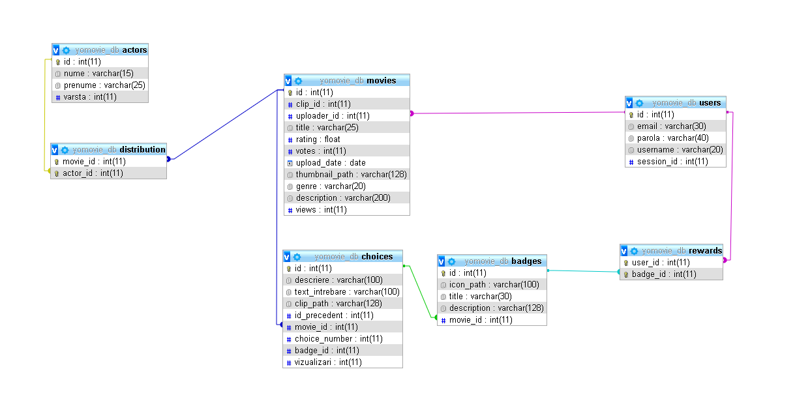

Project Details
Să se creeze o aplicație Web care să ofere posibilitatea distribuției de filme interactive. Un utilizator va putea crea un arbore de decizie, iar aplicația va calcula numărul total de căi posibile. Un vizitator va putea vedea o listă de filme pe care le poate filtra după diferite criterii (gen, lungime, actori etc.) și va putea fi ordonată după popularitate, număr de fire epice, număr de finaluri etc. Vizualizarea informatiilor privitoare la un film se poate realiza interactiv conform arborelui de decizie stabilit. Pentru cea mai populară cale, se va genera un film clasic ce va putea fi vizualizat cu orice aplicație capabilă să redea filme. Unele căi vor putea oferi recompense: insigne sau acces la alte filme, de exemplu, “Bravo, ai ajuns aici, înseamnă că ești un bun cercetaș, acum poți viziona și filmul “Singur printre copaci” sau, pentru altă cale, primești insigna “cold blooded murderer”.
Pentru structurarea aplicatiei am folosit design pattern-ul MVC(Model View Controller) ce permite impartirea responsabilitatilor intre trei entitati.
text/html.
Aceasta componenta are responsabilitatea de a comunica cu baza de date si de a transmite datele necesare Controller-ului.
class Choice extends Model {
public $id = 0;
public $descriere = '';
public $textIntrebare = '';
public $clipPath = '';
public $idPrecedent = 0;
public $choiceNumber = 0;
public $movieId = 0;
public $badgeId = -1;
public $vizualizari = 0;
public function __construct($idClip) {
$con = DB::getInstance()->getConnection();
$stmt = $con->prepare('SELECT * FROM choices WHERE id=?');
$stmt->bindParam(1, $idClip, PDO::PARAM_INT);
$stmt->execute();
$row = $stmt->fetch(PDO::FETCH_ASSOC);
if($row) {
$this->id = $row['id'];
$this->descriere = $row['descriere'];
$this->textIntrebare = $row['text_intrebare'];
$this->clipPath = $row['clip_path'];
$this->idPrecedent = $row['id_precedent'];
$this->choiceNumber = $row['choice_number'];
$this->movieId = $row['movie_id'];
$this->badgeId = $row['badge_id'];
$this->vizualizari = $row['vizualizari'];
}
else {
$this->id = $idClip;
}
}
View-urile sunt reprezentarea datelor cerute prin intermediul interfetei, aceasta comunica cu Controller-ul si ii cere datele corespunzatoare componentei aplicatiei.
Controller-ul este componenta ce face legatura dintre celelalte doua componente, unui view fiindu-i transmise datele din modelul corespondent.
class UploadController extends Controller {
public function index() {
;
}
public function upload($clipNr = 0) {
$this->model('Choice');
$this->model('Badge');
$choice = new Choice($clipNr);
$badge = new Badge($choice->badgeId);
$this->view('upload/upload',['childNodes'=>Choice::getAllChildNodes($clipNr),'badge'=>$badge], $choice);
}
}
Pentru baza de date am folosit MySql, o baza de date relationala ce a permis construirea relatiilor intre tabelele necesare.
Structura tabelelor:
Prima etapa a fost realizarea unei interfete atractiva utilizatorului care sa permita in acelasi timp si un mediu de dezvoltare a functionalitatilor(upload-ul si vizualizarea unor filme interactive).
Urmatoarea etapa a fost realizarea arhitecturii aplicatiei unde am ales design pattern-ul MVC, descris intr-o sectiune anterioara.
Structurarea adecvata a bazei de date a usurat proiectarea aplicatiei. Avand in vedere ca principala componenta functionala este un arbore de decizie ce stabileste cursul filmului, am introdus in tabela 'choices' un camp 'id_precedent' ce referentia alegerea anterioara, astfel permitand libera parcurgere a arborelui
Una dintre functionalitatile proiectului este sortarea filmelor dupa numarul de fire narative. In acest scop, a fost nevoie de calcularea numarului de frunze din arbore pentru a decide numarul de cai posibile de urmat, o frunza reprezentand un clip component al filmului(o alegere) pentru care nu mai exista alte alegeri(unul din finalurile filmului). In continuare e prezentata o secventa de cod PHP ce se foloseste de o interogare PDO pentru a filtra filmele dupa numarul de fire narative stabilind, folosind datele filmului, numarul de frunze(cai) ale filmului.
if($_GET['decisions']!=""){
if(!$firstQuery) {$firstQuery = true;$sqlCustomQuery = $sqlCustomQuery . " WHERE ";}
else $sqlCustomQuery = $sqlCustomQuery . " AND ";
if ($_GET['decisions'] == "Few") $prag = " < 5";
else if ($_GET['decisions'] == "Many") $prag = " >= 5";
$sqlCustomQuery = $sqlCustomQuery . " (SELECT COUNT(*) FROM choices WHERE (text_intrebare IS NULL OR text_intrebare='') AND movie_id = movies.id GROUP BY movie_id)" . $prag;
}
Fiind un proiect de amplitudine redusă (team of 4) s-a folosit un singur branch (master) pe care s-au făcut incremental commit-uri la implementarea fiecărui feature.
Proiectul a folosit sistemul de management și versionare a codului numit git, hostat pe platforma publică github.com, pe un repository privat cu acces doar pentru echipa de dezvoltatori si pentru profesorul evaluator.
https://w3c.github.io/scholarly-html/
https://github.com/w3c/scholarly-html